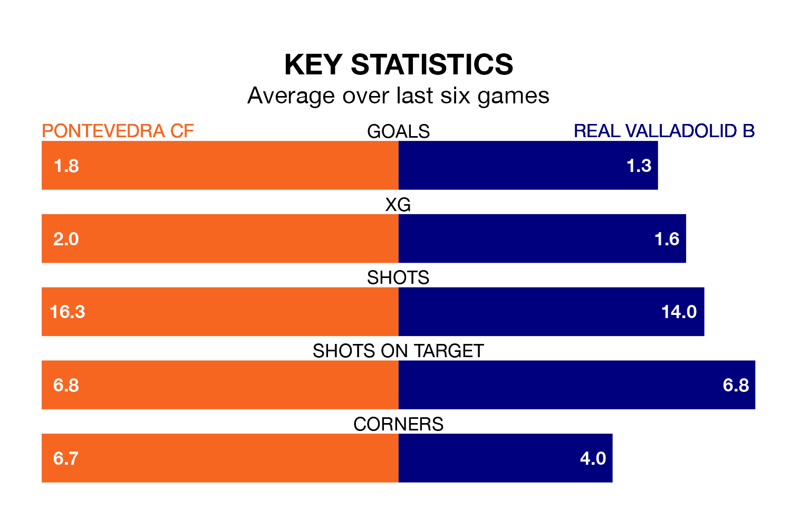

Pontevedra CF are heavy favourites to keep all three points at home in Sunday's kick-off against Real Valladolid B.
Pontevedra, who sit second in Segunda División RFEF Group 1 with 18 games played, are priced at 1.6 to seal victory at Estadio Municipal de Pasarón.
Sitting eight places and 13 points behind them in the table, Valladolid B are 5.5 to win with *Betting Company*, while the draw is at 3.5.
With 39 goals in 18 games so far this season, Pontevedra are the league's highest scorers with 2.2 goals per game. And they are conceding fewer than average, letting in 12 goals at a rate of 0.7 per game.
Valladolid B, meanwhile, are average scorers, with 1.2 goals per game. They have conceded 1.7 goals per game.
In the last 10 years, Pontevedra and Valladolid B have played each other on nine occasions. They won three each, and they drew three times.
On average, Pontevedra scored 1.3 goals and Valladolid B 1.1 in those matches.
Their last meeting was on September 9, when they played out a 1-1 draw.
The hosts are in reasonable form in Segunda División RFEF Group 1, with three wins and two draws from their last six games.
With three wins and a draw over that period, the away team's form is slightly worse – they have taken 10 points from 18, compared to Pontevedra's 11.
Pontevedra's last match was on January 14, a 2-1 win against Gimnástica Torrelavega.
Valladolid B drew 1-1 with Coruxo last time out, also on January 14.
Updated: 14:53 (UTC), 16/01/24